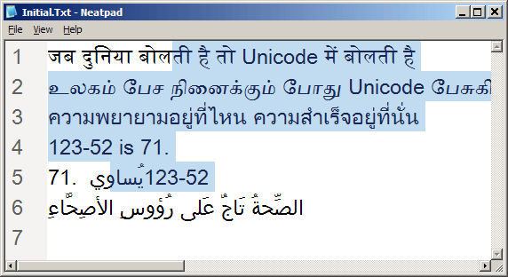
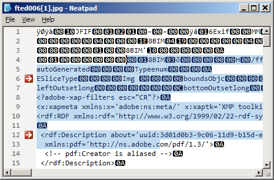

Integrating UspLib
ついにここまで来ました。- UspLibのレンダリング機能を実演する、新しく改良されたNeatpadです。この記事の目的は、UspLibのAPIを文書化することと、UspLibがNeatpadのコードにどのように統合されたかについて、いくつかの詳細を述べることです。UspLibのデザインが良いので、他の人が自分のエディタに取り込んで、すぐにスタイル付きテキストをサポートできるようになることを大いに期待しています。
">
上の画像は、Neatpadの新しいUnicodeテキストレンダリングエンジンの動作を示しています。5つの異なるスクリプトが表示されています - デーヴァナーガリー、タミル、タイ、アラビア、そしてもちろんラテンです。現在、Neatpadでは、フォント・フォールバックはサポートされていないので、これらの異なるスクリプトをすべて表示するには、適切なフォントを選択する必要があります。上の例では、"Arial Unicode MS "フォントを使用していますが、このフォントは22MBもあります。
さて、この最新バージョンにあまり興奮しないでください。表面的にはこれまでと変わりませんが、複雑なスクリプトを多数含むUnicodeファイルを読み込んだときに初めて、すべての作業がどのように行われたかがわかるでしょう。
UspLib APIは以下のように文書化されています。このAPIをあなたのプロジェクトに組み込むことができたら、ぜひ教えてください。
UspLibを使用するには、単一のヘッダーファイルであるusplib.hをインクルードし、usplib.libに対してリンクします。ライブラリ自体には、Windows2000以上に存在するUniscribe Script Processor DLL (usp10.dll)以外の依存関係はありません。
UspAllocate
USPDATA * UspAllocate();
UspAllocateは、新しいUSPDATAオブジェクトを初期化して返します。このオブジェクトは、その後のすべてのUspLib操作に使用されなければなりません。
UspAnalyze
BOOL UspAnalyze (
USPDATA * uspData,
HDC hdc,
WCHAR * wstr,
int wlen,
ATTR * attrRunList, // optional
UINT flags,
USPFONT * uspFont, // optional
SCRIPT_CONTROL * scriptControl,
SCRIPT_STATE * scriptState,
SCRIPT_TABDEF * scriptTabdef, // optional
);
UspAnalyzeは、1つのUSPDATAオブジェクトを入力として受け取り、UTF-16テキストの指定された段落を分析し、その結果をuspDataに戻して保存します。
- uspDataは、分析結果を格納する単一のUSPDATAオブジェクトを指します。このオブジェクトは、以前のUspAnalyzeの呼び出しから再利用することができるため、メモリ割り当てのオーバーヘッドが少なくて済みます。
- hdcは、デバイスコンテキストのハンドルです。
- wstrとwlenの組み合わせで、解析対象となるワイド文字列を特定します。
- attrRunListは、ATTR構造体のオプションの配列を指す。この配列のサイズは、UspAnalyzeの呼び出しでは直接指定されません。各配列要素の ATTR::len フィールドで表されるテキストの範囲は、wlen - 分析される文字列と同じ長さであると想定されます。
attrRunListがNULLの場合、文字列は、デフォルトのシステムカラーとuspFontで指定されたフォントを使用して、テキストの全範囲にわたる単一のデフォルト属性で初期化されます。
- flagsは1つのDWORD変数で、0に設定する必要があります。
- uspFontは、USPFONT構造体のオプションの配列を指します。各配列要素は、事前にUspInitFontを使用して初期化されている必要があります。uspFontがNULLの場合は、HDCで現在選択されているフォントが代わりに使用される。UspTextOutを呼び出す際には、この同じフォントをターゲットデバイスのコンテキストに再選択しなければならない。
- scriptControlは、オプションのSCRIPT_CONTROL構造体を指します。詳細はMSDNを参照してください。
- scriptStateは、オプションのSCRIPT_STATE構造体を指します。詳細はMSDNを参照してください。
- scriptTabdefは、オプションのSCRIPT_TABDEF構造体を指し、タブ展開を行う際に使用するタブストップ位置を定義する。詳細はMSDNを参照してください。
UspAnalyzeは、テキストの段落全体を分析するために使用する必要があります。結果として得られるUSPDATAオブジェクトは、その後のUspTextOutやUspSnapXtoOffsetの呼び出しで使用できます。
struct ATTR
{
COLORREF fg; // foreground text colour
COLORREF bg; // background text colour
int len : 16; // length of this run (in WCHARs)
int font : 7; // font-index into the USPFONT table
int sel : 1; // selection flag (yes/no)
int ctrl : 1; // show as an isolated control-character
int eol : 1; // only valid for last character in line, prevents mouse selection
int reserved : 6; // unused
};
ATTR構造体のすべてのフィールドは、使用前に初期化する必要があります。要求されていないフィールドは、ゼロに設定する必要があります。ATTR::font フィールドは USPFONT テーブルへのインデックスとして使用されます。ATTR::font で参照されるフォントは、 UspInitFont を用いて初期化されていなければなりません。
UspInitFont
void UspInitFont (
USPFONT * uspFont,
HDC hdc,
HFONT hFont
);
UspInitFontは、attrRunList配列の中でUspAnalyzeが参照する各フォントに対して1回呼び出す必要があります。USPFONTオブジェクトは、Uniscribe SCRIPT_CACHEオブジェクトやフォントのテキストメトリックなど、いくつかのフォント関連リソースを管理します。
- uspFontは、単一のUSPFONT構造体を指します。
- hdcは、デバイスコンテキストのハンドルです。
- hFontは、フォントリソースへのハンドルです。
USPFONTの構造は以下のように定義されています。
struct USPFONT
{
HFONT hFont;
SCRIPT_CACHE scriptCache;
TEXTMETRIC tm;
int yoffset; // height-adjustment when drawing font (set to zero)
};
yoffsetフィールドはユーザー定義で、このフォントを使用するすべてのテキストに適用される垂直調整を指定します。UspInitFontは、最初にこの値をゼロに設定しますが、この呼び出しの後に変更することができます。他のすべての構造体メンバーは、UspInitFontによって管理され、呼び出し元によって変更されるべきではありません。
UspFreeFont
void UspFreeFont (
USPFONT * uspFont
);
UspFreeFontは、指定されたUSPFONTリソースが必要なくなったときに呼び出されなければならない。UspInitFontへの呼び出しで指定されたfont-handleは、構造体に内部的に保持されたSCRIPT_CACHEオブジェクトと同様に解放される。
UspApplyAttributes
void UspApplyAttributes (
USPDATA * uspData,
ATTR * attrRunList
);
UspApplyAttributesは、いつでも呼び出すことができ、指定されたUSPDATAオブジェクトのスタイルラン属性を再適用します。色と選択情報のみが使用され、属性ランの他のフィールド（フォントを含む）はすべて無視されます。
- attrRunListは、テキストのスタイルランの新しいリストを指定します。
属性ランリストは、UspAnalyzeによって以前に分析された文字列と同じ長さのテキスト範囲を参照する必要があります。
UspApplySelection
void UspApplySelection (
USPDATA * uspData,
int selStart,
int selEnd
);
UspApplySelectionは、UspApplyAttributesと同様のタスクを実行します。ただし、今回はUSPDATAオブジェクト内の選択フラグのみが変更されます。
- selStartは、選択ハイライトを開始する文字列の開始位置です。
- selEndは、選択-ハイライトの終了位置です。
UspSetSelColor
void UspSetSelColor (
USPDATA * uspData,
COLORREF fg,
COLORREF bg
);
UspSetSelColorは、UspTextOutを呼び出すときに使用される選択ハイライトカラーを制御します。ATTR::sel属性でマークされた文字や、UspApplySelectionで識別されたテキストの範囲は、この色を使って描画されます。デフォルトでは、Windowsの選択ハイライトカラーが使用されることに注意してください。
- fgは、選択範囲の前景色（テキスト）のCOLORREF値です。
- bgは、選択範囲の背景色のCOLORREF値です。
UspTextOut
int UspTextOut (
USPDATA * uspData,
HDC hdc,
int xpos,
int ypos,
int lineHeight,
int lineOffsetY,
RECT * rect
);
UspTextOutは、ScriptStringOutと対をなすものです。先に解析されたUSPDATAオブジェクトを入力として、指定された場所にテキストを描画します。描画されたテキストには、フォントや色、選択範囲のハイライトが適用されます。
- hdcは、デバイスコンテキストのハンドルです。
- xposは、テキストの出力を開始するx座標です。
- yposは、テキスト出力の開始点となるY座標です。
- lineHeightは、各行が占める高さの合計を、ピクセル単位で指定します。テキストの背景は、この範囲内で塗りつぶされます。アプリケーションでは通常、この値を（rect.bottom - rect.top）と同じ値に設定します。
- lineOffsetYは、テキストがオフセットされる垂直方向の距離をyposを基準にしてピクセル単位で指定します。この値は、USPFONT構造体で指定されたY調整に加えて使用されます。ゼロでもよいです。
- rect は、クリッピングが発生する範囲を示す境界矩形です。このパラメータは必ず指定する必要があり、最低でもデバイスコンテキストのクライアントエリアの矩形を特定する必要があります。
マルチパスレンダリングでは、ちらつきが発生するため、この関数の出力を「ダブルバッファ」にすることをお勧めします。この関数の戻り値では、alignment-mode、background-mode、およびdevice-contextの色が指定されていません。
UspTextOutは将来的にワードラッピングに対応するように変更される予定です。
UspSnapXToOffset
BOOL UspSnapXToOffset (
USPDATA * uspData,
int xpos,
int * snappedX, // out, optional
int * charPos, // out
BOOL * fRTL // out, optional
);
UspSnapXtoOffsetは、x座標を最も近い文字オフセットに変換します。さらに、選択された文字のx座標を返します。
- xposは、x座標を指定します。
- snappedXは、調整後のX座標を受け取る整数を指します。
- charPosは、xposに対応する文字位置を受け取る整数を指します。
- fRTLは、xposに対応するアイテムランの方向を受け取るBOOLを指します。TRUEの場合は右から左への実行を、FALSEの場合は左から右への実行を表します。
fRTLパラメータは、xposに対応するテキストランの読解方向に合わせて、テキストカレットの形状を変更する場合に有効です。
UspXToOffset
BOOL UspXToOffset (
USPDATA * uspData,
int xpos,
int * charPos, // out
BOOL * trailing, // out
BOOL * fRTL // out, optional
);
UspXToOffsetは、x座標を文字位置に変換します。
- xposは、x座標を指定します。
- charPosは、xposに対応する文字位置を受け取る変数を指します。
- trailing は、その位置が文字の先頭であるか末尾であるかを示すインジケータを受け取る変数を指します。
- fRTLは、xposに対応するアイテムランの方向を受け取る変数を指します。TRUEの場合は右から左への実行を、FALSEの場合は左から右への実行を表します。
UspOffsetToX
BOOL UspOffsetToX (
USPDATA * uspData,
int offset,
BOOL trailing,
int * xpos // out
);
UspOffsetToXは、文字位置の前縁または後縁のx座標を返します。
- offsetは、文字列の中の文字位置を指定します。
- trailing は、x 座標に対応する文字の端を示します。TRUEの場合は後縁を、FALSEの場合は前縁を表します。
- xposは、character-offsetに対応するx座標を受け取る変数を指します。
UspFree
void UspFree(USPDATA * uspData);
UspFreeは、指定されたUSPDATAオブジェクトが不要になったときに呼び出されます。
Changes to Neatpad
UspLibをNeatpadの既存のコードベースにインポートするのは非常に簡単でした。しかし、これを可能にするために、TextViewライブラリの重要な部分にいくつかの変更が加えられました。これらの変更点を以下に簡単に紹介します。
- NeatTextOutとNeatTextWidthへの参照は、関数自体と同様に削除されました。つまり、UspLib以前の、描画やペインティングについて説明したすべてのチュートリアルは、事実上、時代遅れになっています。提示されたアイデアは良かったのですが、スタイル付きテキストの描画方法（ExtTextOutの連続呼び出し）はUspLibライブラリに取って代わられました。
- 既存のマウス操作のコードは、大幅に複雑さを減らしました。以前のチュートリアルで紹介したキャレットのヒットテストのアイデアも、UspLibが提供する機能に取って代わられました。
- フォント処理が一部UspLibに移行しました。
- 制御文字のレンダリングは、UspLibによって完全に処理されるため、関連するコードはすべてTextViewから削除されました。
大量のコードがTextViewから削除されていますが、実際にはこれらの機能領域はUspLibに移されており、UspLibは描画、フォント、マウスヒットテストのすべての側面を処理しています。
">
UspLibは、主にNeatpadで使用するために設計されました。しかし、他のテキストエディタプロジェクトや、複雑でスタイルのあるテキストを必要とするアプリケーションに使用できないということではありません。UspLibはフリーウェアであり、どのようなプロジェクトにも使用することができます。
Problems with paragraphs
Uniscribe (そしてUspLib)では、テキストの基本単位はパラグラフです。Neatpadのようなテキストエディターでは、一行全体を段落として扱うことができます。しかし、この概念は重要で、UspLibの使用方法に制限を課しています。行全体を分析する必要があるため、事実上、一度にテキストの全行がメモリに入っていなければなりません。そのため、読み込むテキストファイルには「行数」の制限を設けなければなりません。Neatpadでは、一定の長さを超えたテキストの行は切り捨てられます。
恣意的な長蛇の列を処理することを楽しみにしていなかったので、この制限については非常に喜ばしいことです。このように、長い回線にはいくつかの問題があります。
- 行全体がメモリ内になければならない場合、ScriptItemizeでUnicode双方向アルゴリズムを適用するには？
- ところで、最大のラインレングスは何でしょうか？2Gbです。4Gb？
- こんなに長い線のx座標をどうやって表現するのか？x座標は、32bit整数の限界を超えてしまいます。
- タブを含む行の文字数をどのようにカウントするのか？タブを拡張すると、行の長さが4Gbを超える可能性があります。
これらの質問に対する良い答えはありませんので、今のところ、1回線あたり65Kbのようなシンプルな制限で満足しています。この分野で何かご意見があれば、ぜひお聞かせください。
Caching with GetUspData
Uniscribeの大きな問題点は、たった一行のテキストを表示するために、すべてのメモリを割り当てなければならないことです。UspLibは、この複雑さをUSPDATAオブジェクトの後ろに隠します。しかし、各USPDATAが負担するメモリのオーバーヘッドは非常に大きなものです。
グリフ単位で16バイト、ワイド文字単位で14バイト、アイテムラン単位で32バイトとなります。
典型的なUTF-16の文字列の場合、元の文字列の長さの何倍もの長さになることがわかります。明らかに、これはファイル内のすべてのテキスト行に対してUSPDATAオブジェクトを作成するには多すぎます。この問題を解決するために、内部キャッシュからUSPDATAオブジェクトを管理する新しいTextViewメンバ関数が書かれました。
struct USP_CACHE
{
USPDATA * uspData; // the UspLib data for this line
ULONG lineno; // which line this refers to
ULONG usage; // usage count for caching purposes
};
class TextView
{
...
// keep an internal cache of USPDATA objects
USP_CACHE m_uspCache[USP_CACHE_SIZE];
};
TextViewでテキストの行が必要になると（描画やマウスのヒットテストのため）、GetUspData関数が呼び出されます。描画やマウス関連のルーチンは、基礎となるTextDocumentに直接アクセスしなくなりました。すべてのデータアクセスは、この1つの関数を通して行われます。
USPDATA *TextView::GetUspData(HDC hdc, ULONG nLineNo)
{
TCHAR buff[TEXTBUFSIZE];
ATTR attr[TEXTBUFSIZE];
int len;
USPDATA * uspData = << find a cached object >>
// if found a match (an already analyzed line) then return it here!!
if(....)
return uspData;
// otherwise we need to style + analyze a new line
len = m_pTextDoc->getline(nLineNo, buff, TEXTBUFSIZE, &off_chars);
len = ApplyTextAttributes(nLineNo, off_chars, colno, buff, len, attr);
// setup the tabs
int tablist[] = { m_nTabWidthChars };
SCRIPT_TABDEF tabdef = { 1, 0, tablist, 0 };
SCRIPT_CONTROL scriptControl = { 0 };
SCRIPT_STATE scriptState = { 0 };
// generate glyphs etc
UspAnalyze(uspData, hdcTemp, buff, len, attr, 0, m_uspFontList,
&scriptControl, &scriptState, &tabdef);
return uspData;
}
上記のサンプルコードは、GetUspDataがどのように動作するかについての一般的なアイデアを示しています。キャッシュの詳細は退屈なので、ここでは省略しました（実際のソースを見てください）。しかし、このメソッドの背後にあるアイデアは、USPDATAオブジェクトが必要なときにはいつでも、GetUspDataが分析済みのオブジェクトを返すということです。ほとんどの場合、このオブジェクトはキャッシュから取得されますが、たまにTextDocumentから行を取得してUspAnalyzeで分析する必要があります。
Conclusions
Uniscribeへの移行は、Neatpadの開発におけるターニングポイントとなりました。ここに至るまでには多くの努力が必要でしたが、今では未来が非常に明確になっています。いろいろな意味で、このプロジェクトを最初からUniscribeで始めていれば、多くの作業を省くことができただろうと思います。しかし、Unicodeは非常に複雑なので、最初のチュートリアルはこの余分な複雑さに悩まされていたと思います。また、このプロジェクトを始めてからの進化と、その過程で犯した間違いを見るのは良いことだと思います。
全体的に見て、Uniscribeでの作業はとてもやりがいのある経験でした。API自体はかなり複雑ですが、非常によく設計されています。主な難点は、グリフベースのレンダリングの概念を理解することです。しかし、UniscribeのMSDNドキュメントは、かなり不十分な部分があると感じています。Unicodeテキストを表示した経験のない私にとって、このプロジェクトのこのフェーズを最終的に完了するまで、かなりの時間苦労しました。
比較として、ATSUI（Uniscribeと同等のAPIですが、より高レベルです）のAppleドキュメントを見てみましょう。ATSUIのAPIを単に文書化しているのではなく、Appleのシステム上でどのように使用すべきかのガイドラインを示しています。
Coming up in Part 16
UspLibにはまだいくつかの細かい「Todo」があり、それはまだ完了していません。テキストの行末にあるCRLFシーケンスの問題は、双方向テキストのために対処する必要があります。RTLテキストの場合、CRLFは行の右端ではなく、左端、あるいは行の中央になることもあります。もう一つの問題は、ファイルを右から左に完全に配置し、スクロールバーを左に配置して適切に表示することです。
次のチュートリアルでは、TextViewにキーボードサポートを追加することを考えます。実際のテキスト入力は、TextDocumentが実際にテキストを編集できるようになるまで待たなければならないので、キーボードでのキャレット移動にのみ焦点を当てます。キャレット移動のコードは、UniscribeのScriptBreakルーチンを使用しますので、おそらくUspLib関数が2つほど追加されることになるでしょう。
その先にはシンタックスハイライトがあると思いますが、GUIが完全に完成したら、いよいよファイル編集に移ります。終わりが近づいてきたと感じています。